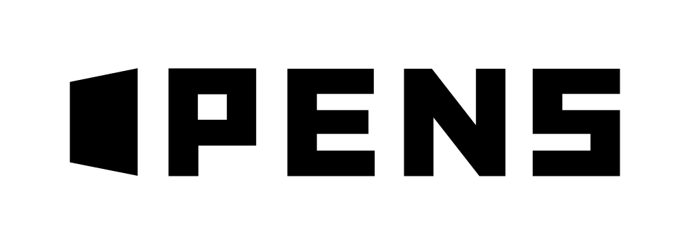
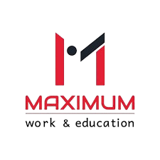
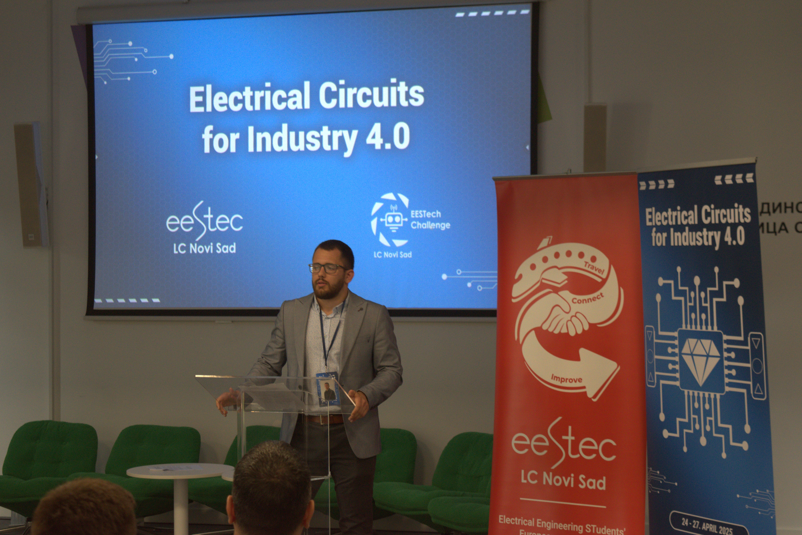
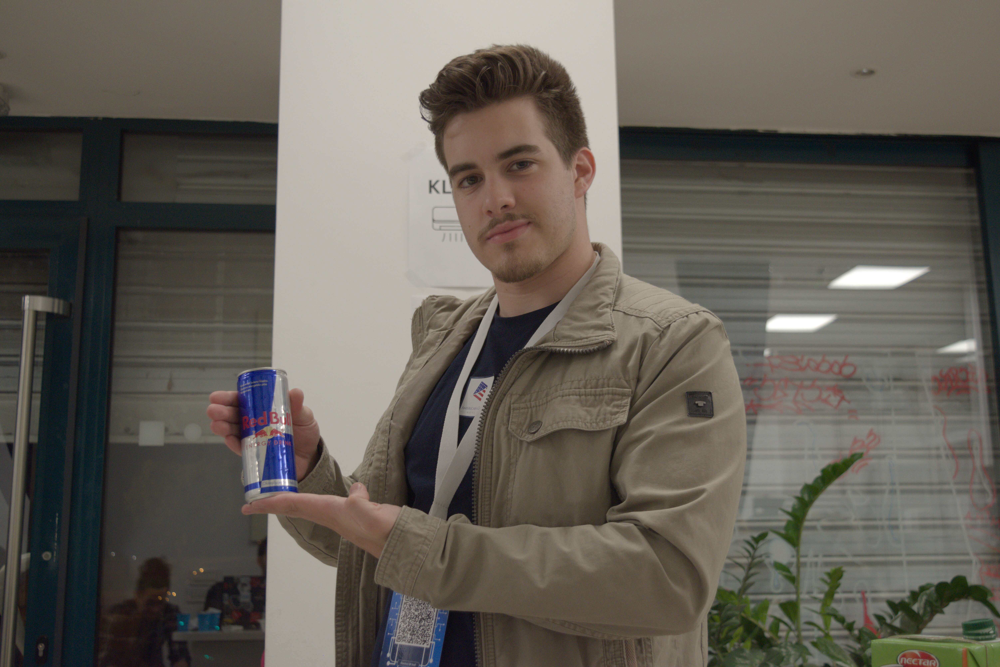
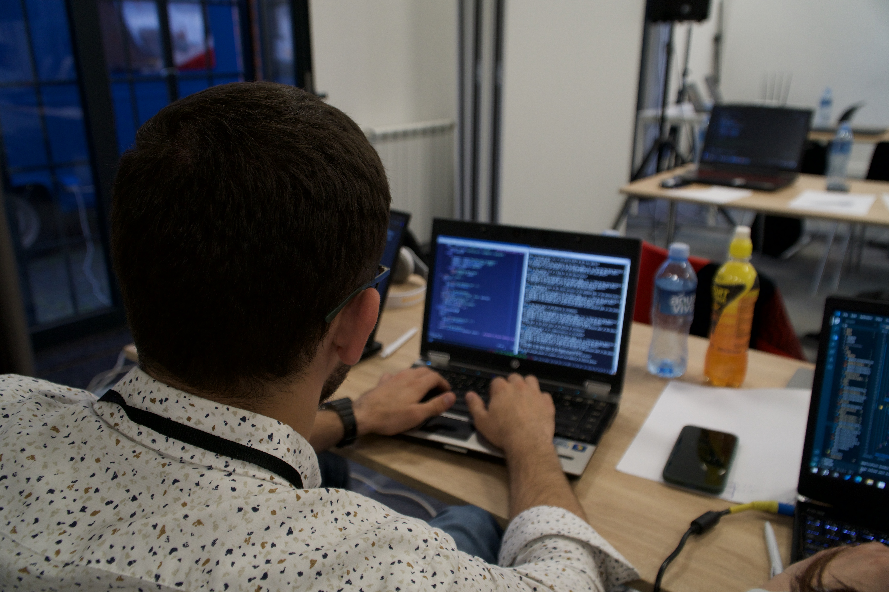
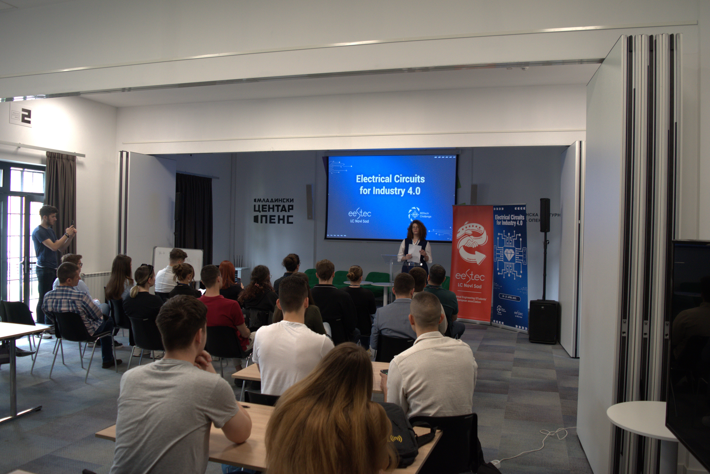
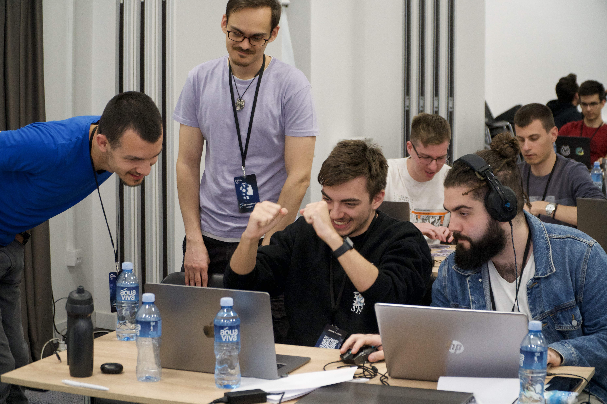
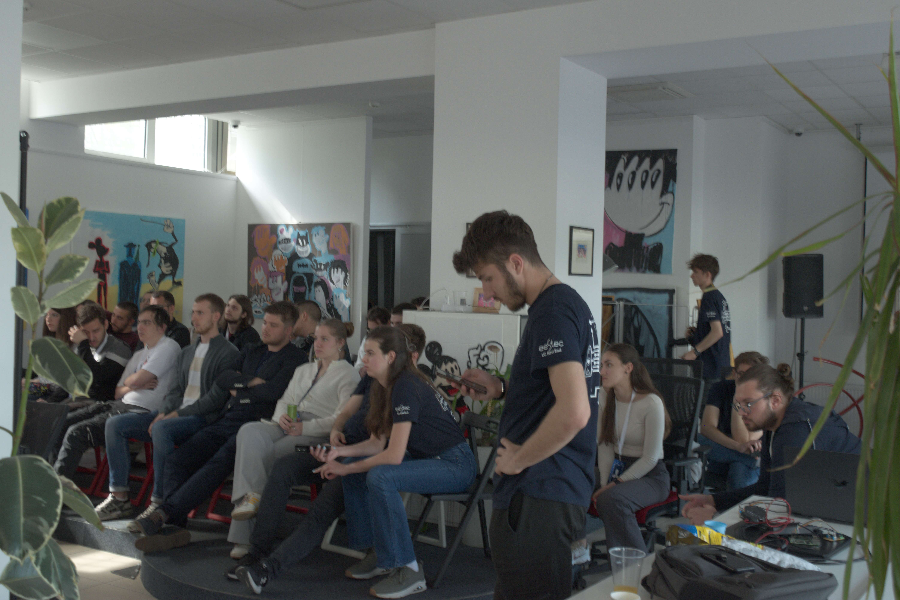
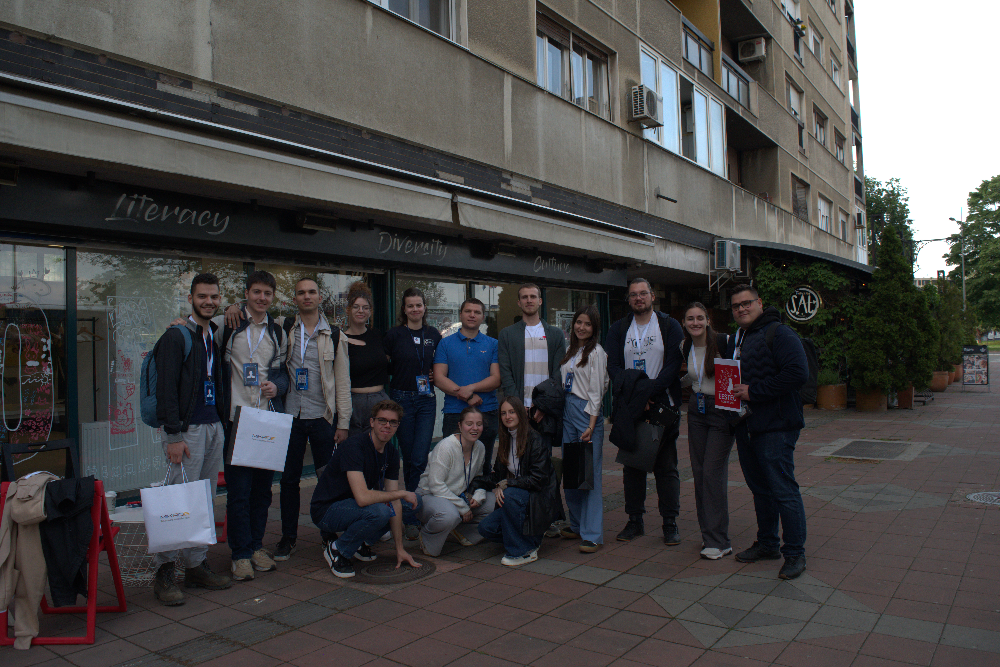

Akademski program
7. i 8. maj 2026.
OPENS Novi Sad

Hakaton
9. do 10. maj 2026.
Maximum Novi Sad
7. Maj

OPENS Novi Sad
14:00
14:45
Predavanje: Kako vozila interpetiraju svet oko sebe? Aleksandra Lojaničić
Kako da razvijaš i debaguješ embedded sisteme – čak i ako nemaš fizički uređaj pored sebe?Upoznaj NECTO Studio, moćno razvojno okruženje nove generacije, i Planet Debug, inovativnu platformu koja omogućava daljinski rad sa pravim hardverom – bilo kada, bilo gde.

15:00
15:45
Predavanje: Internet of Things i automobili - lični pogled. Milan Vidaković
Na predavanju ćemo zaviriti u svet Brain-Computer Interface (BCI) sistema, koji nalaze primenu u medicini, obrazovanju, gamingu, pa čak i marketingu.

16:00
16:45
Predavanje: Principi sajber bezbednosti za savremene sajber-fizičke sisteme. Goran Sladić
Naš gost dolazi iz kompanije DunavNET, gde je deo tima koji razvija IoT rešenja od nule do implementacije. Tema predavanja prati projekat razvijen u saradnji sa Henkelom, koji štedi resurse i već se koristi širom sveta – od Brazila i Južne Afrike do Evrope.

17:00
18:00
Panel diskusija - Autonomna vožnja i sigurna povezana vozila: Izazovi i perspektive.
Šta se dešava kada se veštačka inteligencija uključi u proizvodni proces? Od pametnih fabrika do prediktivne analitike – AI u Industriji 4.0 nije više budućnost, već svakodnevica.

18:15
19:00
Predavanje: Harmonizacija asimetričnih viđ-šeprocesorskih sistema sa mešovitom kritičnošću kroz statičku komunikaciju. Nikola Stojkov
Od teorije do konkretne primene – saznaj kako PID regulator omogućava precizno upravljanje sistemima u industriji, robotici i svakodnevnom životu.

8. Maj
OPENS Novi Sad
13:30
16:30
Pripremna radionica: AI u autonomnoj vožnji. Aleksandar Vujinović
Spremni za izazov na hakatonu? Ova radionica je savršen početak! Nauči osnove Raspberry Pi-ja i SCADA sistema i saznaj kako da primeniš ove tehnologije u svom projektu. Pripremi se za realne izazove i unapredi svoje znanje!

9. Maj
Maximum Novi Sad
11:30
12:00
Čekiranje učesnika.
Prvi korak hakatona je čekiranje učesnika i potvrda prisustva. Takmičari preuzimaju svoje akreditacije i upoznaju se sa rasporedom događaja, nakon čega sledi zvanični početak programa.

12:00
12:15
Uvodna reč i otvaranje hakatona.
Događaj počinje uvodnom reči organizatora i zvaničnim otvaranjem hakatona. Predstavlja se zadatak koji će timovi rešavati, kao i kriterijumi ocenjivanja i očekivanja od učesnika.

12:15
+24h
HAKATON.
Takmičari imaju 24 sata da osmisle i razviju rešenje zadatog problema. Tokom tog perioda rade u tročlanim timovima, uz podršku mentora, fokusirani na inovativnost, funkcionalnost i kvalitet finalnog rešenja.

10. Maj
Maximum Novi Sad
12:00
13:00
Kraj hakatona, predaja rešenja i pauza.
Nakon isteka vremena, timovi predaju svoja finalna rešenja. Sledi kratka pauza tokom koje se žiri priprema za evaluaciju, a učesnici imaju priliku da se odmore pred završni deo događaja.

13:00
17:00
Prezentacija rešenja i svečana dodela nagrada.
Svaki tim prezentuje svoje rešenje pred žirijem i publikom. Nakon ocenjivanja, proglašavaju se pobednici i dodeljuju nagrade najboljim timovima, čime se hakaton svečano zatvara.
